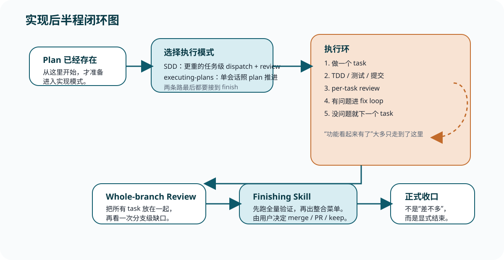

SDD
默认更重：任务级 dispatch、任务级 review、fix loop、整分支 final review，然后显式 finish。
Reference
这页只做压缩回看：当你再次怀疑“功能不是已经有了吗，为什么 workflow 还没完”时，先翻这里。
功能出现 = 可演示状态；review 完整、finish 明确 = 正式收口状态。
Superpowers 的后半程关心的，不只是“有没有把功能做出来”，还关心“有没有把这份工作整合进更大的分支和协作上下文里”。

| 阶段 | 你该怎么记 |
|---|---|
| 有了 plan | 准备进入实现模式，不等于已经进入收尾。 |
| SDD / executing-plans | 按任务推进执行。 |
| Per-task review | 每个任务做完后就过 gate。 |
| Whole-branch review | 整条分支再看一次。 |
| finishing-a-development-branch | 跑全量验证，出 merge / PR / keep 菜单，由用户拍板。 |
默认更重：任务级 dispatch、任务级 review、fix loop、整分支 final review，然后显式 finish。
更像单会话按 plan 推进。仍然要 finish，但遇阻更强调停下来 ask，而不是持续自主推进。